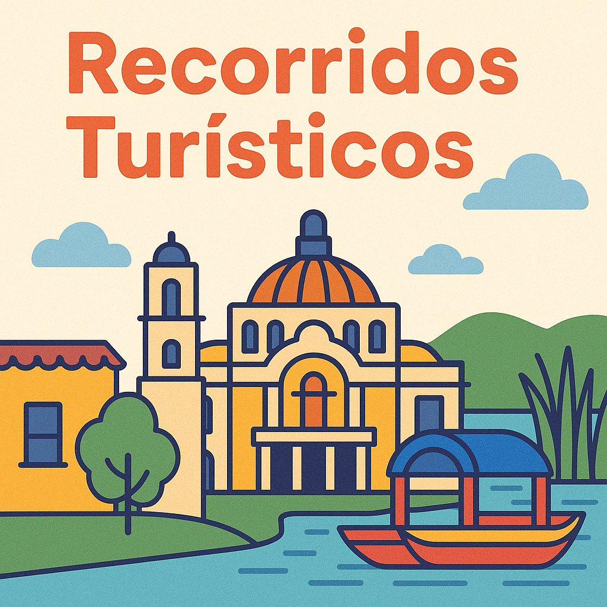

Cabecera
Explora la CDMX a tu ritmo
Te llevamos por los rincones más emblemáticos y entrañables de la Ciudad de México. Nuestros recorridos turísticos están diseñados para todos los gustos: historia, arte, gastronomía y tradiciones vivas.
Elige tu destino o ¡hazlos todos! Cada recorrido incluye guías locales apasionados, transporte cómodo y experiencias auténticas que recordarás para siempre.
Centro Histórico
Xochimilco
Coyoacán
